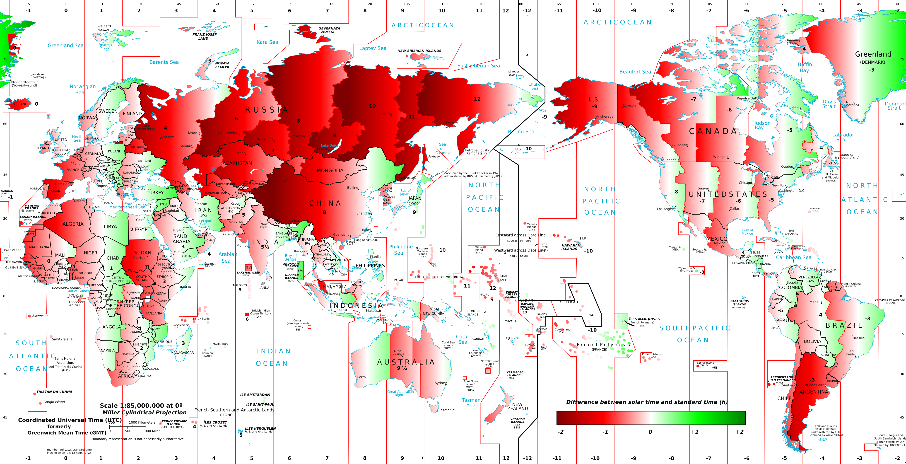

UTC est le temps utilisé en hiver par le Royaume-Uni
France : UTC + 1 en hiver et UTC + 2 en été
Standardisation de la réprésentation de la date et l'heure
Commence par P et ensuite un chiffre et une unité, l'heure étant séparé par T
P18Y9M4DT11H9M8S = 18 ans 9 mois 4 jours 11h 9 minutes 8 secondes
Sert à la représentation usuelle
DateCalendarDate est un instant basé sur un timestampCalendar est une date et une heureDate n'a aucun support de l'i18n ou du l10nCalendar, SimpleDateFormat ou encore TimeZoneSimpleDateFormat ne permet pas de formater ou parser un Calendarnew Date().getYear() renvoit 114 (basé sur 1900)Date et Calendar sont mutablesSimpleDateFormat est instancié à plusieurs centaines d'endroit dans le JDKnull pour la plupart de ses méthodes constructricesNullPointerException si on essaye de passer null5 packages, 39 classes + 13 enums + 4 exception + 13 interfaces
Instant now = Instant.now();
Instant instant = Instant.ofEpochSecond(3600);
instant.toEpochMilli(); // Timestamp
instant.plus(1, ChronoUnit.DAYS);
instant.isAfter(now);
LocalDateTime ldt = LocalDateTime.of(2014,11,10,8,34,56)
ldt.atZone(ZoneOffset.UTC).toInstant() // TimeZone obligatoire
ldt.getMonth() // Month.NOVEMBER
ldt.getDayOfWeek() // DayOfWeek.MONDAY
ldt.withHour(12) // Nouvelle instance
ZoneId paris = ZoneId.of("Europe/Paris");
ZoneId ny = ZoneId.of("America/New_York");
ZoneId london = ZoneId.of("Europe/London");
ZonedDateTime zdt = ZonedDateTime.of(2014,3,29,2,30,0, 0, paris);
zdt.withZoneSameLocal(london); // 2014-03-29T02:30Z
zdt.withZoneSameInstant(ny); // 2014-03-28T21:30-04:00
Instant
ZoneOffset offset = ZoneOffset.ofHours(1)
OffsetDateTime ldt = OffsetDateTime.of(2014,3,29,2,30,0, 0, offset)
ldt.toInstant()
Duration duration = Duration.ofHours(2).plusMinutes(74);
duration.toString(); // PT3H14M
Instant now = Instant.now();
Instant now2 = Instant.now().plusMillis(60002);
Duration d2 = Duration.between(now, now2); //PT1M0.002S
duration.plus(d2); // PT3H15M0.002S
Period period = Period.ofMonths(2).plusDays(5);
period.toString(); // P2M5D
ZoneOffset offset = ZoneOffset.ofHours(2);
OffsetDateTime odt = OffsetDateTime.of(2013,2,4,8,0,0,0, offset);
odt.plus(period); //2013-04-09T08:00+02:00
Period.between(LocalDate.of(1954,3,2), LocalDate.of(2013,10,5)); //P59Y7M3D
LocalDate : 2014-10-23YearMonth : 2014-10Year : 2014LocalTime : 08:34:23DayOfWeek : DayOfWeek.TUESDAYMonth : Month.JANUARYMonthDay : 23 septembreSystem.currentTimeMillis()
public class MyBean {
private Clock clock; // dependency inject
public void process(LocalDate eventDate) {
if (eventDate.isBefore(LocalDate.now(clock)) {
}
}
}
LocalDate.parse("2013-03-24")import static java.time.format.DateTimeFormatter.*;
DateTimeFormatter fmt = ofPattern("dd MM yyyy");
LocalDate.parse("24 03 2013", fmt);import static java.time.format.DateTimeFormatter.*;
DateTimeFormatter fmt = ofPattern("dd MM yyyy");
LocalDate.from(fmt.parse("23 12 1998"));
fmt.parse("23 12 1998", LocalDate::From)
LocalDate.now().toString()import static java.time.format.DateTimeFormatter.*;
DateTimeFormatter fmt = ofPattern("dd MM yyyy");
LocalDate.now().format(fmt)import static java.time.format.DateTimeFormatter.*;
DateTimeFormatter fmt = ofPattern("dd MM yyyy");
fmt.format(LocalDate.now())
LocalDate ld = LocalDate.of(2013,2,3);
DateTimeFormatter formatter = DateTimeFormatter.ofPattern("EEEE, MMMM")
ld.format(formatter.withLocale(Locale.FRANCE)); //dimanche, février
ld.format(formatter.withLocale(Locale.JAPAN)); //日曜日, 2月
OffsetDateTime dt1 = OffsetDateTime.parse("2012-11-05T06:00+01:00");
OffsetDateTime dt2 = OffsetDateTime.parse("2012-11-05T07:00+02:00");
dt1.equals(dt2) // false
dt1.compareTo(dt2) // -1
dt1.isEqual(dt2) // true
Year et pas IntegerMonth ou DayOfWeekLocalDateInstantZonedDateTimeLocalDateTime